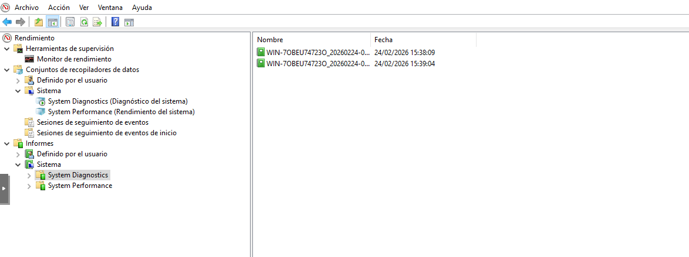
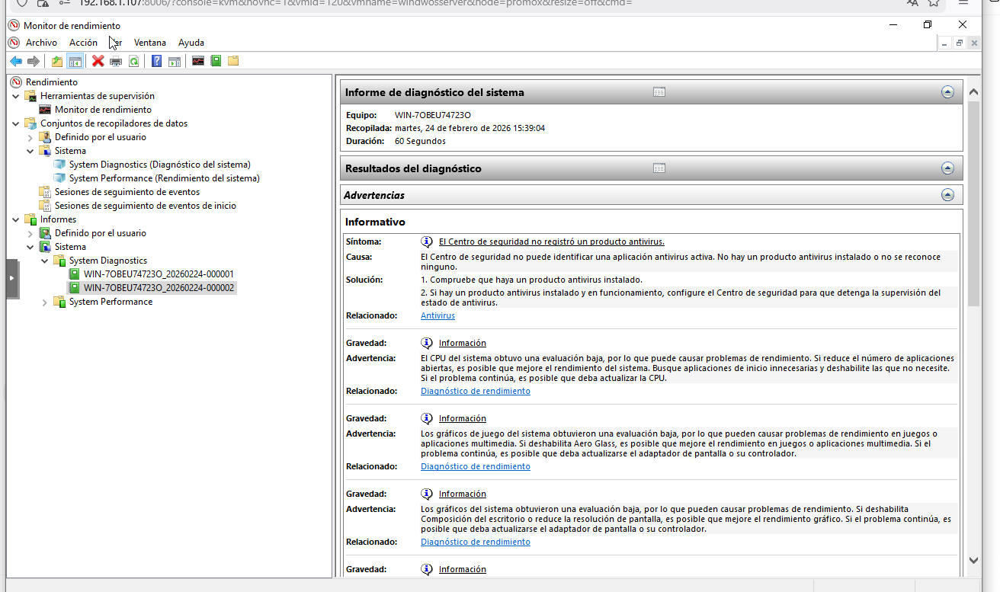
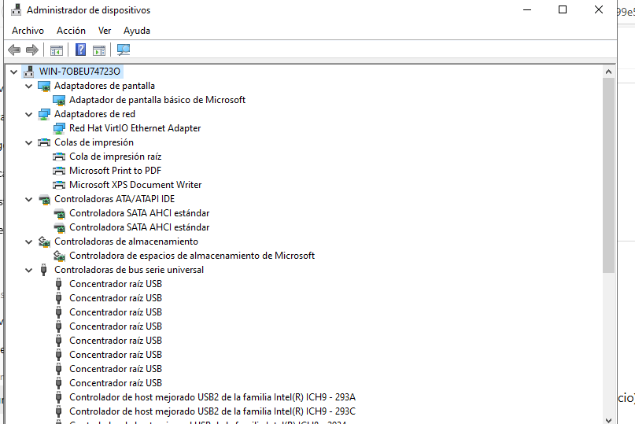
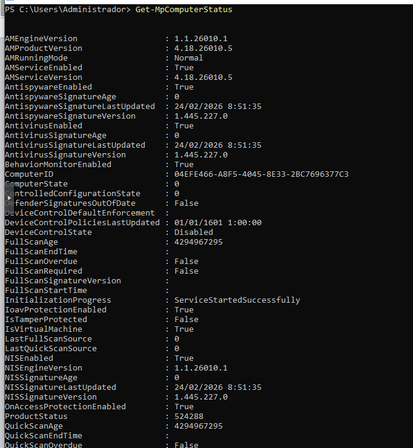
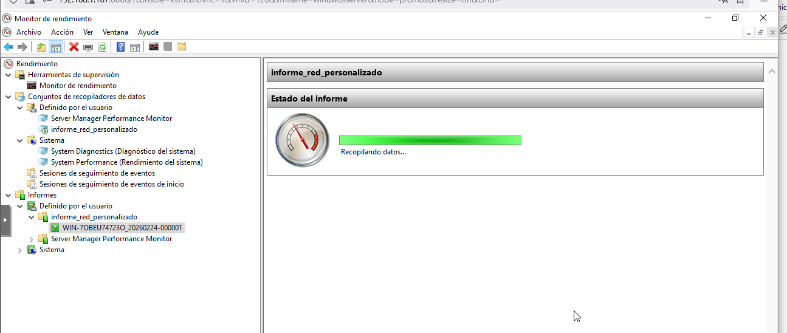
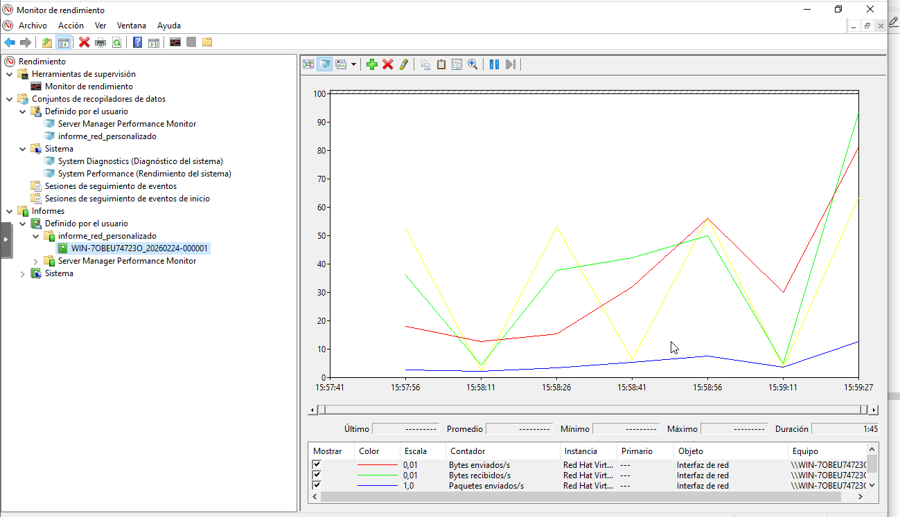

Se accede a Perfmon y dentro de “Conjuntos de recopiladores de datos → Sistema” se ejecuta el “Diagnóstico del sistema”. Este proceso analiza configuración, servicios, red, disco y seguridad.

Tras finalizar la recopilación se genera un informe completo que muestra:

Se revisa el Administrador de dispositivos para verificar posibles errores. No aparecen dispositivos con advertencias ni controladores sin instalar. El sistema se encuentra correctamente configurado a nivel de hardware.

Get-MpComputerStatus
Se comprueba mediante PowerShell que Microsoft Defender Antivirus está activo. La protección en tiempo real se encuentra habilitada y el sistema está protegido.

Se crea un conjunto de recopiladores definido por el usuario denominado “Informe_Red_Personalizado”, configurado para monitorizar:
El conjunto se ejecuta durante unos segundos para generar datos reales.

Tras detener la recopilación, se accede a “Informes → Definido por el usuario” y se visualiza el informe generado. Este permite analizar el comportamiento de la interfaz de red en tiempo real.

Se ha realizado una recopilación completa del estado del sistema en Windows Server, analizando rendimiento, controladores, seguridad y red. Además, se ha creado un informe personalizado que permite monitorizar de manera específica recursos críticos. Estas herramientas permiten detectar problemas antes de que afecten a la disponibilidad del servidor.